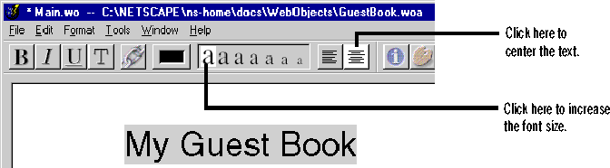

Creating a Simple WebObjects Application
 Table of Contents
Table of Contents  Previous Section
Previous Section
Create the application's input fields
The GuestBook application allows users to enter their names, e-mail addresses, and comments in an HTML form. In this first part of the tutorial, you'll create the HTML form for input and provide a way for the component's script to capture the input and add it to the list of guests.
Enter static text
A component can contain both static text and dynamic HTML elements. To add static text to a page, you can type it directly into the component's window. To demonstrate this, add a title for the GuestBook's page.
- Click the Main.wo window to bring it to the front.
- Type My Guest Book and press Enter.
- Select the words you just typed.
- In the toolbar, click the largest A and the Center icon to increase the text's font size and to center it.

You just added an HTML element to the page in the simplest way: by typing and formatting. The toolbar allows you to center or justify the text you enter, to select a color, and to select a font size. Usually, you'll want better control over what type of HTML element is created when you enter text. For this reason, it's more common to use the palette window as described in the next section.
Table of Contents  Next Section
Next Section